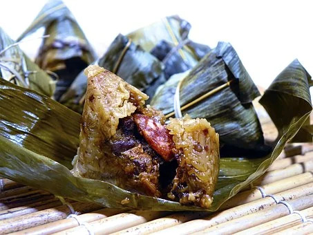

Dragon Boat Festival
Dragon Boat Festival (which is also called : Duanwu Jie), is celebrated on the fifth day of the fifth month according to the Chinese calendar.
The legend about Dragon Boat Festival

- The Legend of Qu Yuan
The proper name of the festival is actually The Duan Wu (Tuen Ng in Cantonese) Festival. Dragon Boat racing, which is the main activity linked to the festival, is held each year on the fifth day of the fifth month of the Lunar Calendar to commemorate the death of Qu Yuan (pronounced Chu Yuan), a well-loved statesman and poet,who lived in the Chinese kingdom of Chu more than 2,000 years ago.
- The Legend of Rice Dumplings
Although the traditional rice dumplings stem from the legend of Qu Yuan, their distinctive pyramid shape and leaf wrappings come from another legend. In about 40BC a high-ranking official revealed to fishermen that their offerings were being eaten by the River Dragon and suggested that they wrap the rice in leaves first and then tie them with the lucky five-coloured threads which the dragon monster dreaded. The fishermen followed his advice and used palm leaves to wrap the rice into pyramidal dumplings, and named them zong because zong sounds like the Chinese word for "palm".
Today, zong zi are wrapped in bamboo leaves. Popular varieties include glutinous rice with savoury meat and beans, sweet, or salty bean-filled dumplings, and the small, yellow-green type made of glutinous rice preserved in lye.
Customs of Dragon Boat Festival
- Dragon Boat Racing
- Eating Zongzi
- Inserting Acorus and Artemisia on Doors or Windows：On Dragon Boat Day, people often put Acorus and Artemisia leaves on their doors and windows to repel insects, flies, fleas, and moths from the house.
- Hanging Calamus and Wormwood
- Wearing Perfume Pouches：Many contagious diseases and plagues were said to originate during the fifth lunar month. Chinese people, especially children, made incense bags and hung them on their necks to avoid catching contagious diseases and to keep evil spirits away.
{kind=link}
{kind=link}